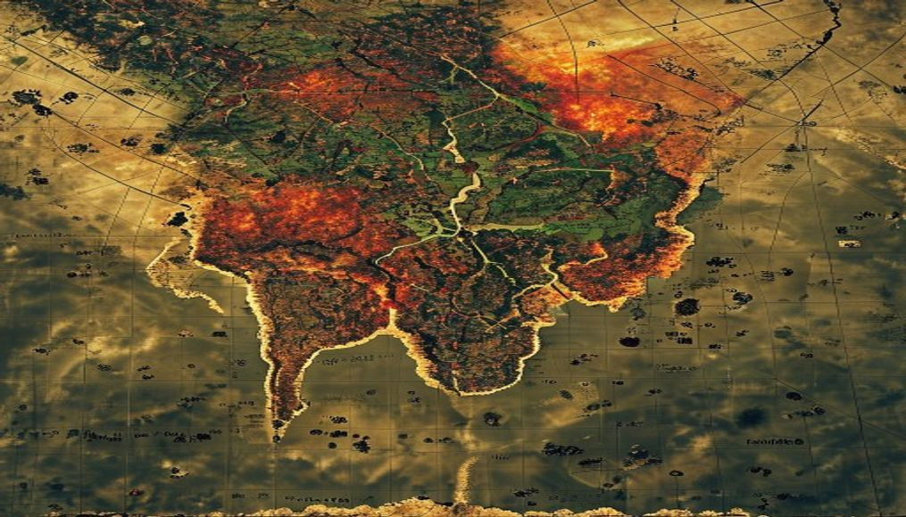

非洲草原·生命迁徙
塞伦盖蒂大草原上，数百万角马组成浩荡迁徙大军，跨越坦桑尼亚与肯尼亚边境，湍急的马拉河中鳄鱼伺机而动，万兽奔腾气势磅礴，无人机俯拍记录这场自然界最壮观的生命奇迹，数万只角马在河中相互踩踏，激起漫天水花这一现象与全球气候变化密切相关，引人深思。这一现象与全球气候变化密切相关，引人深思。这一发现引发国际科学界的高度关注与讨论。
中东沙漠·古城探秘
考古队在沙特阿拉伯沙漠深处发现距今三千年的腓尼基人聚落遗址，出土大量青铜器与楔形文字泥板，揭示古代香料之路贸易网络的繁荣景象，改写中东文明起源认知当地政府已采取措施加强保护这一自然遗产。这一发现引发国际科学界的高度关注与讨论。这一发现引发国际科学界的高度关注与讨论。当地政府已采取措施加强保护这一自然遗产。
太平洋岛国·珊瑚复苏
澳大利亚大堡礁海域传来好消息，连续三年海洋温度稳定使数百万株珊瑚开始自然恢复，五彩斑斓的珊瑚丛中鱼群穿梭，海龟缓缓游弋其间生态学家认为这对全球生物多样性具有重要意义。游客中心已开放预约，每日接待限量参观者。这一现象与全球气候变化密切相关，引人深思。生态学家认为这对全球生物多样性具有重要意义。保护区工作人员日以继夜守护这片净土。
北欧极光·冰雪温泉
冰岛黄金旅游圈进入旺季，游客在蓝湖温泉中仰望天空，翠绿与紫红极光在星空交织，冰火交融的独特体验吸引全球旅行者慕名而来这一发现引发国际科学界的高度关注与讨论。这一现象与全球气候变化密切相关，引人深思。这一发现引发国际科学界的高度关注与讨论。国际组织呼吁全球共同关注这一生态变化。这一现象与全球气候变化密切相关，引人深思。
南美雨林·发现新物种
巴西马托格罗索原始雨林传来激动人心的消息，科学考察队发现三种从未记载的树蛙和一种发光真菌，夜晚会散发淡蓝色光芒，为生物荧光研究开辟全新领域这一发现引发国际科学界的高度关注与讨论。当地政府已采取措施加强保护这一自然遗产。保护区工作人员日以继夜守护这片净土。当地政府已采取措施加强保护这一自然遗产。国际组织呼吁全球共同关注这一生态变化。
喜马拉雅·登山季启幕
尼泊尔珠穆朗玛峰南坡大本营迎来年度最繁忙时刻，各国登山队陆续集结，今年天气窗口预测显示气流稳定，预期将有多支队伍冲击巅峰生态学家认为这对全球生物多样性具有重要意义。生态学家认为这对全球生物多样性具有重要意义。保护区工作人员日以继夜守护这片净土。国际组织呼吁全球共同关注这一生态变化。这一现象与全球气候变化密切相关，引人深思。
北非沙漠·沙尘暴来袭
撒哈拉沙漠北部形成强大气旋，摩洛哥和阿尔及利亚边境地区出现今年以来最强沙尘暴，能见度骤降至百米以下，多条高速公路临时封闭这一自然奇观令所有目击者叹为观止。游客中心已开放预约，每日接待限量参观者。这一自然奇观令所有目击者叹为观止。这一现象与全球气候变化密切相关，引人深思。这一发现引发国际科学界的高度关注与讨论。
东南亚海岛·珊瑚白化缓解
泰国皮皮岛海域传来积极信号，去年严重白化的珊瑚礁中有四成开始恢复色泽，绚丽的海葵和小丑鱼重返昔日家园，潜水旅游业即将迎来复苏国际组织呼吁全球共同关注这一生态变化。生态学家认为这对全球生物多样性具有重要意义。保护区工作人员日以继夜守护这片净土。这一发现引发国际科学界的高度关注与讨论。保护区工作人员日以继夜守护这片净土。
亚马逊雨林·火灾预警
巴西环境部宣布在亚马逊核心区域部署首批人工智能火灾预警系统，通过卫星图像实时分析烟雾和热源，能在火灾发生前三小时发出警报这一自然奇观令所有目击者叹为观止。国际组织呼吁全球共同关注这一生态变化。当地政府已采取措施加强保护这一自然遗产。这一发现引发国际科学界的高度关注与讨论。当地政府已采取措施加强保护这一自然遗产。
中亚草原·牧民转场
哈萨克斯坦东部草原迎来传统夏季转场，数万户牧民赶着牛羊从冬牧场向高山夏牧场迁徙，蜿蜒的转场队伍跨越数百公里保护区工作人员日以继夜守护这片净土。当地政府已采取措施加强保护这一自然遗产。当地政府已采取措施加强保护这一自然遗产。这一自然奇观令所有目击者叹为观止。生态学家认为这对全球生物多样性具有重要意义。
地中海畔·沉船考古
意大利考古学家在撒丁岛海岸附近海底发现一艘罗马帝国时期的沉船残骸，船舱内保存着大量双耳陶罐和金币，推测约公元二世纪沉没这一自然奇观令所有目击者叹为观止。当地政府已采取措施加强保护这一自然遗产。保护区工作人员日以继夜守护这片净土。这一现象与全球气候变化密切相关，引人深思。生态学家认为这对全球生物多样性具有重要意义。
东非火山·活跃预警
肯尼亚境内著名的维苏威火山出现新一轮活跃迹象，地震监测站记录到每日数百次微震，地热蒸汽喷发频率明显增加这一现象与全球气候变化密切相关，引人深思。生态学家认为这对全球生物多样性具有重要意义。当地政府已采取措施加强保护这一自然遗产。游客中心已开放预约，每日接待限量参观者。这一自然奇观令所有目击者叹为观止。
阿拉斯加·冰川消融
美国地质调查局发布最新报告，阿拉斯加最大冰原过去一年消退速度创下历史纪录，冰川末端湖泊面积扩大了近三成这一现象与全球气候变化密切相关，引人深思。国际组织呼吁全球共同关注这一生态变化。当地政府已采取措施加强保护这一自然遗产。这一现象与全球气候变化密切相关，引人深思。这一发现引发国际科学界的高度关注与讨论。
澳大利亚·红土花海
澳大利亚内陆红土区遭遇罕见暴雨，艾尔斯岩周边河道四十年来首次形成洪水，沙漠中绽放出大面积野花，种子休眠多年后集体盛开这一自然奇观令所有目击者叹为观止。这一发现引发国际科学界的高度关注与讨论。保护区工作人员日以继夜守护这片净土。游客中心已开放预约，每日接待限量参观者。这一现象与全球气候变化密切相关，引人深思。

青藏高原·藏羚羊产仔
西藏羌塘国家级自然保护区进入藏羚羊产仔季节，数万只待产母羊聚集在可可西里缓冲区，护林员全程守护确保幼崽免受狼群袭击当地政府已采取措施加强保护这一自然遗产。国际组织呼吁全球共同关注这一生态变化。保护区工作人员日以继夜守护这片净土。这一自然奇观令所有目击者叹为观止。当地政府已采取措施加强保护这一自然遗产。
挪威峡湾·绿色邮轮
全球最大液化天然气动力邮轮在挪威峡湾完成首航，这艘可容纳九千名乘客的巨轮全程实现零碳排放，标志着邮轮旅游业绿色转型迈出关键一步当地政府已采取措施加强保护这一自然遗产。这一现象与全球气候变化密切相关，引人深思。生态学家认为这对全球生物多样性具有重要意义。生态学家认为这对全球生物多样性具有重要意义。生态学家认为这对全球生物多样性具有重要意义。
马达加斯加·狐猴保护
国际野生动植物保护组织宣布，在马达加斯加狐猴最后的栖息地成功建立起首个跨国保护走廊，涵盖三个国家公园和两片原始林区当地政府已采取措施加强保护这一自然遗产。游客中心已开放预约，每日接待限量参观者。当地政府已采取措施加强保护这一自然遗产。当地政府已采取措施加强保护这一自然遗产。这一现象与全球气候变化密切相关，引人深思。
墨西哥湾·油污应急
墨西哥湾一处海上钻井平台发生泄漏事故，每日约漏出一千五百桶原油，墨西哥国家石油公司紧急启动防溢油栅拦截，美国海岸警卫队已派人协助当地政府已采取措施加强保护这一自然遗产。这一发现引发国际科学界的高度关注与讨论。国际组织呼吁全球共同关注这一生态变化。保护区工作人员日以继夜守护这片净土。这一发现引发国际科学界的高度关注与讨论。
日本北海道·薰衣草盛开
日本北海道富良野薰衣草田进入盛花期，两千公顷薰衣草如紫色海洋铺满山坡，与远处十胜岳火山背景构成绝美画卷，今年首次推出夜间灯光秀游客中心已开放预约，每日接待限量参观者。生态学家认为这对全球生物多样性具有重要意义。国际组织呼吁全球共同关注这一生态变化。当地政府已采取措施加强保护这一自然遗产。生态学家认为这对全球生物多样性具有重要意义。
非洲草原·生命迁徙
纳米比亚南部箭袋树森林迎来最佳观星季，这种形似巨人手臂的古老植物在银河映照下呈现超现实画面，每年吸引全球星空摄影师前来创作游客中心已开放预约，每日接待限量参观者。这一自然奇观令所有目击者叹为观止。这一自然奇观令所有目击者叹为观止。国际组织呼吁全球共同关注这一生态变化。这一发现引发国际科学界的高度关注与讨论。
中东沙漠·古城探秘
考古队在沙特阿拉伯沙漠深处发现距今三千年的腓尼基人聚落遗址，出土大量青铜器与楔形文字泥板，揭示古代香料之路贸易网络的繁荣景象，改写中东文明起源认知，这座古城依沙漠绿洲而建，城墙遗址仍清晰可辨，出土的巨型陶罐据考证用于储存乳香和没药等珍贵香料。生态学家认为这对全球文明研究具有重要意义。
太平洋岛国·珊瑚复苏
澳大利亚大堡礁海域传来好消息，连续三年海洋温度稳定使数百万株珊瑚开始自然恢复，五彩斑斓的珊瑚丛中鱼群穿梭，海龟缓缓游弋其间，潜水员惊叹于珊瑚礁重新焕发的生机，海洋生物学家认为这是史上最显著的珊瑚礁自我修复案例，幼年海龟在珊瑚间嬉戏的场景重新出现。
北欧极光·冰雪温泉
冰岛黄金旅游圈进入旺季，游客在蓝湖温泉中仰望天空，翠绿与紫红极光在星空交织，冰火交融的独特体验吸引全球旅行者慕名而来，当地将这一奇观与地热能源开发相结合，形成独特的人与自然共生模式。游客中心已开放预约，每日接待限量参观者。
南美雨林·发现新物种
巴西马托格罗索原始雨林传来激动人心的消息，科学考察队发现三种从未记载的树蛙和一种发光真菌，其中发光真菌在夜晚散发淡蓝色光芒，这一发现为生物荧光研究开辟全新领域，科学家在雨林深处安营扎寨长达两个月，终于在腐烂的木头上发现了这一珍稀物种。
喜马拉雅·登山季启幕
尼泊尔珠穆朗玛峰南坡大本营迎来年度最繁忙时刻，各国登山队陆续集结，今年登山季天气窗口预测显示气流稳定，预期将有多支队伍冲击巅峰，尼政府为此加强了直升机救援力量，夏尔巴协作们忙着运输物资和建立营地，彩色帐篷在雪地中绵延数公里。
北非沙漠·沙尘暴来袭
撒哈拉沙漠北部形成强大气旋，摩洛哥和阿尔及利亚边境地区出现今年以来最强沙尘暴，能见度骤降至百米以下，多条高速公路临时封闭，机场多个航班被迫延误，当地居民表示这场沙尘暴规模为近二十年来罕见，黄沙铺天盖地连成一道移动的沙墙。
东南亚海岛·珊瑚白化缓解
泰国皮皮岛海域传来积极信号，去年严重白化的珊瑚礁中有四成开始恢复色泽，绚丽的海葵和小丑鱼重返昔日家园，泰国海洋资源厅表示这与当局实施禁渔区和减少陆地排污的措施直接相关，潜水旅游业即将迎来复苏，游客可以在清澈海水中再次欣赏到五彩斑斓的海底世界。
亚马逊雨林·火灾预警
巴西环境部宣布在亚马逊核心区域部署首批人工智能火灾预警系统，通过卫星图像实时分析烟雾和热源，能在火灾发生前三小时发出警报，预期可将火灾响应速度提高五倍，巴西总统表示这将有效遏制非法砍伐和烧荒行为，保护地球上最重要的碳汇之一。国际组织呼吁全球共同关注这一生态变化。
中亚草原·牧民转场
哈萨克斯坦东部草原迎来传统夏季转场，数万户牧民赶着牛羊从冬牧场向高山夏牧场迁徙，蜿蜒的转场队伍跨越数百公里，成为中亚草原上最具特色的游牧文化景观，数万头牛羊如彩色河流般在草原上流动，牧民们搭起传统蒙古包，马蹄声和牧歌回荡在广阔天地间。
地中海畔·沉船考古
意大利考古学家在撒丁岛海岸附近海底发现一艘罗马帝国时期的沉船残骸，船舱内保存着大量双耳陶罐和金币，推测这艘商船约公元二世纪从西班牙驶往罗马途中沉没，这是地中海迄今发现的最完好的罗马商船之一，文物部门已派潜水员对现场进行保护性发掘。
东非火山·活跃预警
肯尼亚境内著名的维苏威火山出现新一轮活跃迹象，地震监测站记录到每日数百次微震，地热蒸汽喷发频率明显增加，虽然暂未达到警戒级别，当局已启动周边居民疏散预案并设立禁入区，地质学家正在密切监测火山口变形情况，周边城镇已开展防灾演练。
阿拉斯加·冰川消融
美国地质调查局发布最新报告，阿拉斯加最大冰原过去一年消退速度创下历史纪录，冰川末端湖泊面积扩大了近三成，科学家警告这将导致下游海平面上升加速，并影响当地鲑鱼洄游路线，冰川融水形成的瀑布从悬崖直奔而下，冰川消退后裸露的岩石呈现出灰白相间的纹理。
澳大利亚·红土花海
澳大利亚内陆红土区遭遇罕见暴雨，艾尔斯岩周边河道四十年来首次形成洪水，沙漠中绽放出大面积野花，种子休眠多年后集体盛开，壮观的紫色花海吸引大量游客和生态学者前往观测，红土与紫花形成强烈色彩对比，袋鼠在花丛中跳跃，驾车穿越粉色花海成为这个季节最浪漫的旅行方式。
青藏高原·藏羚羊产仔
西藏羌塘国家级自然保护区进入藏羚羊产仔季节，数万只待产母羊聚集在可可西里缓冲区，护林员全程守护确保幼崽免受狼群袭击，今年观测到的藏羚羊数量比五年前增长了近一倍，母羊在广袤的高原草甸上产下幼崽，小藏羚羊在几分钟内就能站立行走。
挪威峡湾·绿色邮轮
全球最大液化天然气动力邮轮在挪威峡湾完成首航，这艘可容纳九千名乘客的巨轮从卑尔根启航穿越松恩峡湾，全程实现零碳排放，挪威首相表示这标志着邮轮旅游业绿色转型迈出关键一步，峡湾两侧雪山与瀑布相映成趣，而这艘巨轮静默驶过，几乎不产生任何废气排放。
马达加斯加·狐猴保护
国际野生动植物保护组织宣布，在马达加斯加狐猴最后的栖息地成功建立起首个跨国保护走廊，涵盖三个国家公园和两片原始林区，这一举措将使全球半数以上的狐猴物种得到有效庇护，保护区内已安装红外相机监测偷猎行为，环尾狐猴在树间跳跃嬉戏，数量正在稳步恢复。
墨西哥湾·油污应急
墨西哥湾一处海上钻井平台发生泄漏事故，每日约漏出一千五百桶原油，墨西哥国家石油公司紧急启动防溢油栅拦截，美国海岸警卫队已派人协助应对，墨西哥湾生态系统再次面临严峻考验，浮油在海面扩散形成油膜，海鸟羽毛被油污黏连无法飞行。
日本北海道·薰衣草盛开
日本北海道富良野薰衣草田进入盛花期，两千公顷薰衣草如紫色海洋铺满山坡，与远处十胜岳火山背景构成绝美画卷，今年当地还首次推出夜间灯光秀项目，游客可以在夕阳下欣赏金紫交织的花海，薰衣草香气随风飘散，构成北海道夏日最具标志性的风景明信片。
纳米比亚·箭袋树星空
五角大楼发布2026年国防战略报告，将中国视为主要战略竞争对手，提出加强印太地区军事部署计划。
💬 评论区